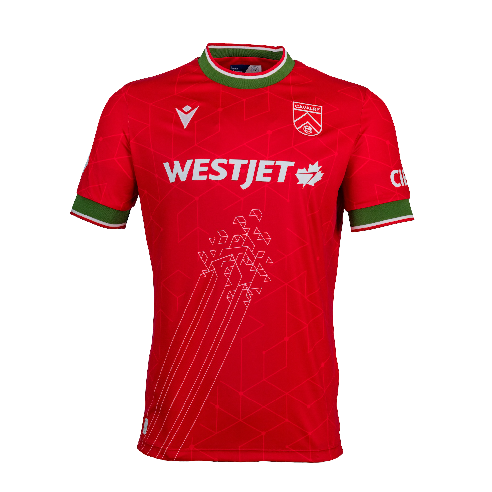
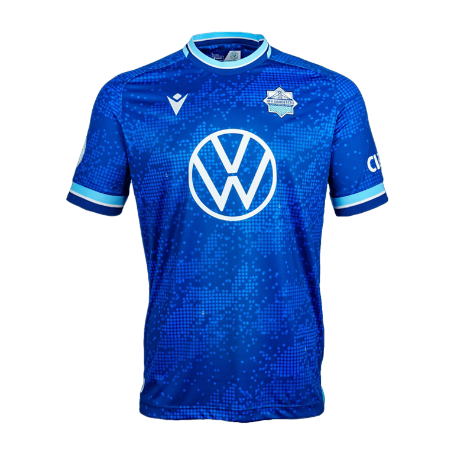
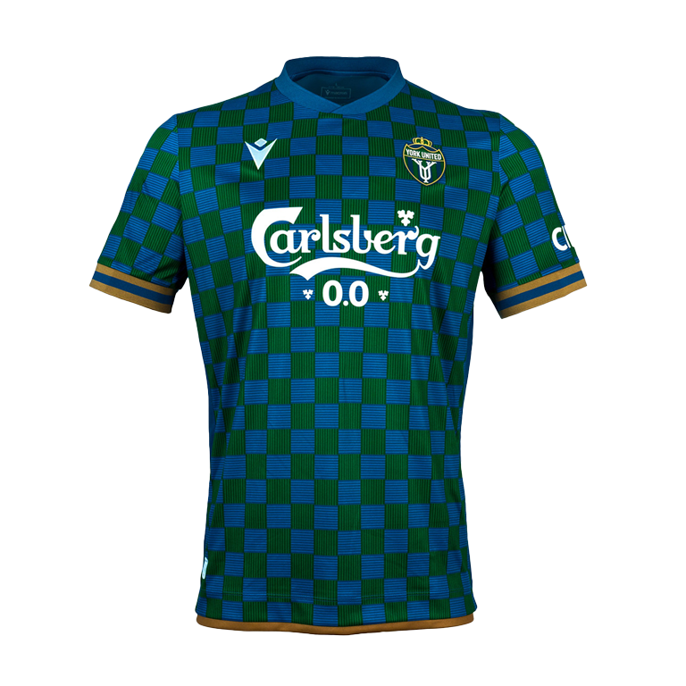
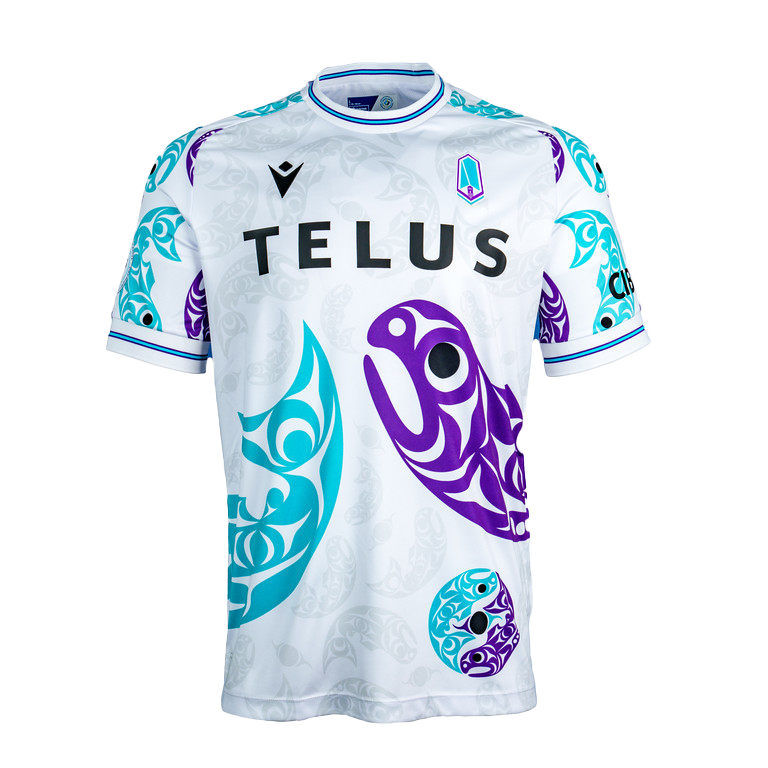
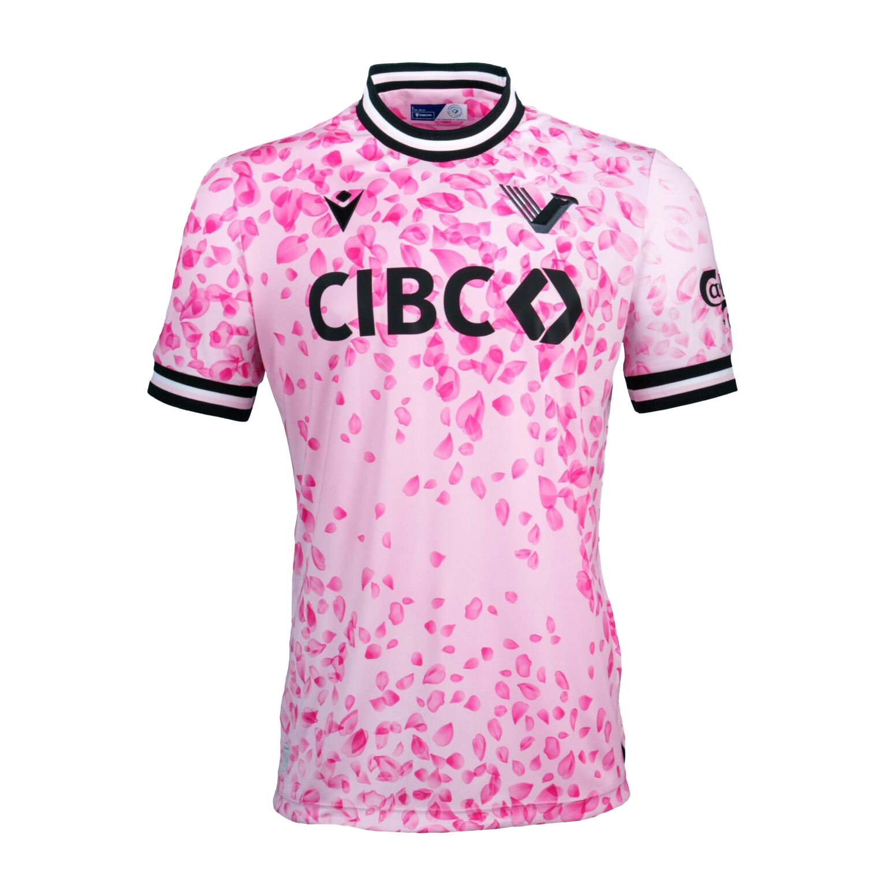

Home
Collection
The 5 Best Kits of the 2024 CPL Season
Learn more about what inspired the fan favourites from this year's Canadian Premier League campaign.

Cavarly FC
The Innovation Kit
Read More

HFX Wanderers
The Harbour Kit
Read More

York United
The Chessboard Kit
Read More

Pacific FC
The Resilience Kit
Read More

Vancouver FC
The Cherry Blossom Kit
Read More